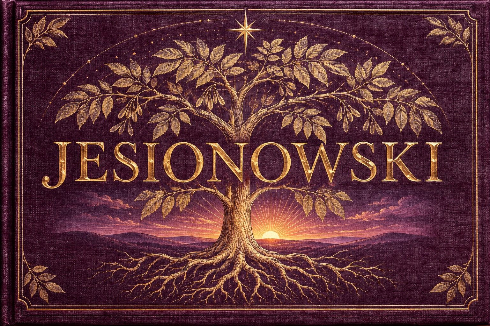
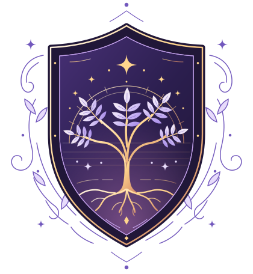

Make room for each mind
Offer a written version. Ask what pace, space, or support helps. Make it easy to pause, pass, or come back later.
A neurodivergent family field guide
We’re the Jesionowski family. We make room for different minds, imagine futures together, and build the trust it takes to bring one of them to life.

01 / Our family creed
We start with the family as a unit of trust. What we practice at home shapes what we can build together.
Offer a written version. Ask what pace, space, or support helps. Make it easy to pause, pass, or come back later.
Keep promises small enough to keep. Ask before sharing someone’s story. When something goes wrong, name it and make a repair.
Picture a likely future and a hopeful one. Say what each depends on, then try a small step that helps in both.
02 / The name we carry
Jesionowski is a Polish surname with several proposed place-name origins. Jesion is Polish for ash tree, the inspiration for our crest.

Our family crest. The ash tree recalls the name, the roots represent trust, and the star stands for the futures we can imagine together.
Explore the crest03 / The Jesionowski Empire
“Jesionowski Empire” is our playful name for the things we can grow across generations. Think family stories, useful projects, and traditions people can join in their own way.
A starting plan for our first 90 days
Days 01–30 · Gather
Invite each person to share a story, an idea, or an access need in whatever format works for them. Start a private family archive and ask before making anything public.
Days 31–60 · Imagine
Try a likely, hopeful, and hard scenario. For each, write down what would have to be true, who might be left out, and what we could try this month.
Days 61–90 · Build
Choose one shared project, like an illustrated family timeline. Name a steward and a check-in date, then ask what built trust and what we’d change next time.
An open invitation to the family
Bring one documented piece of family history, one idea for a better future, or one small promise we can keep together. Ask permission before sharing someone else’s story.
Visit the site repository